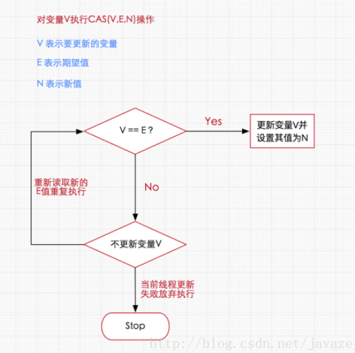

<!DOCTYPE html>


  <html class="light page-post">


<head><meta name="generator" content="Hexo 3.8.0">
  <meta charset="utf-8">
  
  <title>java原子变量类笔记 | 胡思旺</title>

  <meta name="viewport" content="width=device-width, initial-scale=1, maximum-scale=1">

  
    <meta name="keywords" content="全栈,微服务,Java,Netty,Vue,机器学习,Python">
  

  <meta name="description" content="Java 原子变量类笔记原子操作硬件的实现原理 在intel x86处理器使用基于对缓存加锁或总线加锁的方式来实现多处理器之间的原子操作    通过总线锁保证原子性，使用处理器提供的一个LOCK＃信号，当一个处理器在总线上输出此信号时，其他处理器的请求将被阻塞住，那么该处理器可以独占共享内存    通过缓存锁定来保证原子性，在同一时刻，我们只需保证对某个内存地址的操作是原子性即可，但总线锁定把CP">
<meta property="og:type" content="article">
<meta property="og:title" content="java原子变量类笔记">
<meta property="og:url" content="http://yoursite.com/2018/11/07/java原子变量类笔记/index.html">
<meta property="og:site_name" content="胡思旺">
<meta property="og:description" content="Java 原子变量类笔记原子操作硬件的实现原理 在intel x86处理器使用基于对缓存加锁或总线加锁的方式来实现多处理器之间的原子操作    通过总线锁保证原子性，使用处理器提供的一个LOCK＃信号，当一个处理器在总线上输出此信号时，其他处理器的请求将被阻塞住，那么该处理器可以独占共享内存    通过缓存锁定来保证原子性，在同一时刻，我们只需保证对某个内存地址的操作是原子性即可，但总线锁定把CP">
<meta property="og:locale" content="default">
<meta property="og:image" content="http://yoursite.com/2018/11/07/java原子变量类笔记/kk1.PNG">
<meta property="og:updated_time" content="2018-11-07T07:29:38.219Z">
<meta name="twitter:card" content="summary">
<meta name="twitter:title" content="java原子变量类笔记">
<meta name="twitter:description" content="Java 原子变量类笔记原子操作硬件的实现原理 在intel x86处理器使用基于对缓存加锁或总线加锁的方式来实现多处理器之间的原子操作    通过总线锁保证原子性，使用处理器提供的一个LOCK＃信号，当一个处理器在总线上输出此信号时，其他处理器的请求将被阻塞住，那么该处理器可以独占共享内存    通过缓存锁定来保证原子性，在同一时刻，我们只需保证对某个内存地址的操作是原子性即可，但总线锁定把CP">
<meta name="twitter:image" content="http://yoursite.com/2018/11/07/java原子变量类笔记/kk1.PNG">

  

  
    <link rel="icon" href="/favicon.ico">
  

  <link href="/css/styles.css?v=c114cben" rel="stylesheet">


  
    <link rel="stylesheet" href="/css/personal-style.css">
  

  

  
  <script type="text/javascript">
    var _hmt = _hmt || [];
    (function() {
      var hm = document.createElement("script");
      hm.src = "//hm.baidu.com/hm.js?57e94d016e201fba3603a8a2b0263af0";
      var s = document.getElementsByTagName("script")[0];
      s.parentNode.insertBefore(hm, s);
    })();
  </script>


  
  <script type="text/javascript">
	(function(){
	    var bp = document.createElement('script');
	    var curProtocol = window.location.protocol.split(':')[0];
	    if (curProtocol === 'https') {
	        bp.src = 'https://zz.bdstatic.com/linksubmit/push.js';        
	    }
	    else {
	        bp.src = 'http://push.zhanzhang.baidu.com/push.js';
	    }
	    var s = document.getElementsByTagName("script")[0];
	    s.parentNode.insertBefore(bp, s);
	})();
  </script>


  

</head>
</html>
<body>


  
    <span id="toolbox-mobile" class="toolbox-mobile">盒子</span>
  

  <div class="post-header CENTER">
   
  <div class="toolbox">
    <a class="toolbox-entry" href="/">
      <span class="toolbox-entry-text">盒子</span>
      <i class="icon-angle-down"></i>
      <i class="icon-home"></i>
    </a>
    <ul class="list-toolbox">
      
        <li class="item-toolbox">
          <a class="CIRCLE" href="/archives/" rel="noopener noreferrer" target="_self">
            博客
          </a>
        </li>
      
        <li class="item-toolbox">
          <a class="CIRCLE" href="/project/" rel="noopener noreferrer" target="_self">
            项目
          </a>
        </li>
      
        <li class="item-toolbox">
          <a class="CIRCLE" href="/about/" rel="noopener noreferrer" target="_self">
            联系
          </a>
        </li>
      
    </ul>
  </div>


</div>


  <div id="toc" class="toc-article">
    <strong class="toc-title">文章目录</strong>
    <ol class="toc"><li class="toc-item toc-level-1"><a class="toc-link" href="#Java-原子变量类笔记"><span class="toc-text">Java 原子变量类笔记</span></a><ol class="toc-child"><li class="toc-item toc-level-2"><a class="toc-link" href="#原子操作硬件的实现原理"><span class="toc-text">原子操作硬件的实现原理</span></a></li><li class="toc-item toc-level-2"><a class="toc-link" href="#Java-CAS"><span class="toc-text">Java CAS</span></a></li><li class="toc-item toc-level-2"><a class="toc-link" href="#CAS操作"><span class="toc-text">CAS操作</span></a></li><li class="toc-item toc-level-2"><a class="toc-link" href="#原子变量类"><span class="toc-text">原子变量类</span></a></li><li class="toc-item toc-level-2"><a class="toc-link" href="#原子更新基本类型"><span class="toc-text">原子更新基本类型</span></a></li><li class="toc-item toc-level-2"><a class="toc-link" href="#原子更新数组"><span class="toc-text">原子更新数组</span></a></li><li class="toc-item toc-level-2"><a class="toc-link" href="#原子更新引用类型"><span class="toc-text">原子更新引用类型</span></a></li><li class="toc-item toc-level-2"><a class="toc-link" href="#原子更新字段类"><span class="toc-text">原子更新字段类</span></a></li><li class="toc-item toc-level-2"><a class="toc-link" href="#volatile与Atomic原子操作的区别"><span class="toc-text">volatile与Atomic原子操作的区别</span></a></li><li class="toc-item toc-level-2"><a class="toc-link" href="#性能比较"><span class="toc-text">性能比较</span></a></li></ol></li></ol>
  </div>


<div class="content content-post CENTER">
   <article id="post-java原子变量类笔记" class="article article-type-post" itemprop="blogPost">
  <header class="article-header">
    <h1 class="post-title">java原子变量类笔记</h1>

    <div class="article-meta">
      <span>
        <i class="icon-calendar"></i>
        <span>2018.11.07</span>
      </span>

      
        <span class="article-author">
          <i class="icon-user"></i>
          <span>siwang.hu</span>
        </span>
      

      


      
        <span>
          <i class="icon-comment"></i>
          <a href="http://www.github.com/siwanghu/2018/11/07/java原子变量类笔记/#disqus_thread"></a>
        </span>
      

      
      
    </div>
  </header>

  <div class="article-content">
    
      <h1 id="Java-原子变量类笔记"><a href="#Java-原子变量类笔记" class="headerlink" title="Java 原子变量类笔记"></a>Java 原子变量类笔记</h1><h2 id="原子操作硬件的实现原理"><a href="#原子操作硬件的实现原理" class="headerlink" title="原子操作硬件的实现原理"></a>原子操作硬件的实现原理</h2><blockquote>
<p>在intel x86处理器使用基于对缓存加锁或总线加锁的方式来实现多处理器之间的原子操作  </p>
<ul>
<li><p>通过总线锁保证原子性，使用处理器提供的一个LOCK＃信号，当一个处理器在总线上输出此信号时，其他处理器的请求将被阻塞住，那么该处理器可以独占共享内存  </p>
</li>
<li><p>通过缓存锁定来保证原子性，在同一时刻，我们只需保证对某个内存地址<br>的操作是原子性即可，但总线锁定把CPU和内存之间的通信锁住了，这使得锁定期间，其他处理器不能操作其他内存地址的数据，所以总线锁定的开销比较大，目前处理器在某些场合下使用缓存锁定代替总线锁定来进行优化，所谓“缓存锁定”是指内存区域如果被缓存在处理器的缓存行中，并且在Lock操作期间被锁定，那么当它执行锁操作回写到内存时，处理器不在总线上声言LOCK＃信号，而是修改内部的内存地址，并允许它的缓存一致性机制来保证操作的原子性，因为缓存一致性机制会阻止同时修改由两个以上处理器缓存的内存区域数据，当其他处理器回写已被锁定的缓存行的数据时，会使缓存行无效  </p>
</li>
</ul>
</blockquote>
<h2 id="Java-CAS"><a href="#Java-CAS" class="headerlink" title="Java CAS"></a>Java CAS</h2><blockquote>
<ul>
<li><p>在Java中可以通过锁和循环CAS的方式来实现原子操作  </p>
</li>
<li><p>CAS通过调用JNI代码实现。JVM将CAS操作编译为底层提供的最有效方法。在支持CA 的处理器上，JVM 将它们编译为相应的机器指令；在不支持CAS的处理器上，JVM将使用自旋锁  </p>
</li>
<li><p>一般情况下，比锁性能更高。因为 CAS 是一种非阻塞算法，所以其避免了线程被阻塞时的等待时间</p>
</li>
</ul>
</blockquote>
<h2 id="CAS操作"><a href="#CAS操作" class="headerlink" title="CAS操作"></a>CAS操作</h2><blockquote>
<p><br>CAS操作属于乐观派，它总认为自己可以成功完成操作，当多个线程同时使用CAS操作一个变量时，只有一个会胜出，并成功更新，其余均会失败，但失败的线程并不会被挂起，仅是被告知失败，并且允许再次尝试，当然也允许失败的线程放弃操作  </p>
</blockquote>
<h2 id="原子变量类"><a href="#原子变量类" class="headerlink" title="原子变量类"></a>原子变量类</h2><blockquote>
<ul>
<li><p>原子变量比锁的粒度更细，量级更轻，并且对于在多处理器系统上实现高性能的并发代码来说是非常关键  </p>
</li>
<li><p>原子类在内部使用现代CPU支持的CAS指令(cmpxchg)来实现同步。这些指令通常比锁更快  </p>
</li>
<li><p>java.util.concurrent.atomic包下面，采用了CAS机制来实现加锁  </p>
</li>
<li><p>atomic不会造成像使用lock、synchronized等线程频繁的上下文切换，造成由于频繁上下文切换带来的资源浪费  </p>
</li>
</ul>
</blockquote>
<h2 id="原子更新基本类型"><a href="#原子更新基本类型" class="headerlink" title="原子更新基本类型"></a>原子更新基本类型</h2><blockquote>
<ul>
<li>AtomicBoolean - 原子更新布尔类型  </li>
<li>AtomicInteger - 原子更新整型  </li>
<li>AtomicLong - 原子更新长整型  <figure class="highlight plain"><table><tr><td class="gutter"><pre><span class="line">1</span><br><span class="line">2</span><br><span class="line">3</span><br><span class="line">4</span><br><span class="line">5</span><br><span class="line">6</span><br><span class="line">7</span><br><span class="line">8</span><br><span class="line">9</span><br><span class="line">10</span><br><span class="line">11</span><br><span class="line">12</span><br><span class="line">13</span><br><span class="line">14</span><br><span class="line">15</span><br><span class="line">16</span><br><span class="line">17</span><br></pre></td><td class="code"><pre><span class="line">public class AtomicIntegerDemo &#123;</span><br><span class="line"></span><br><span class="line">    public static void main(String[] args) throws InterruptedException &#123;</span><br><span class="line">        ExecutorService executorService = Executors.newFixedThreadPool(5);</span><br><span class="line">        AtomicInteger count = new AtomicInteger(0);</span><br><span class="line">        for (int i = 0; i &lt; 1000; i++) &#123;</span><br><span class="line">            executorService.submit((Runnable) () -&gt; &#123;</span><br><span class="line">                System.out.println(Thread.currentThread().getName() + &quot; count=&quot; + count.get());</span><br><span class="line">                count.incrementAndGet();</span><br><span class="line">            &#125;);</span><br><span class="line">        &#125;</span><br><span class="line"></span><br><span class="line">        executorService.shutdown();</span><br><span class="line">        executorService.awaitTermination(30, TimeUnit.SECONDS);</span><br><span class="line">        System.out.println(&quot;Final Count is : &quot; + count.get());</span><br><span class="line">    &#125;</span><br><span class="line">&#125;</span><br></pre></td></tr></table></figure>
</li>
</ul>
</blockquote>
<h2 id="原子更新数组"><a href="#原子更新数组" class="headerlink" title="原子更新数组"></a>原子更新数组</h2><blockquote>
<ul>
<li>AtomicIntegerArray - 原子更新整型数组里的元素  </li>
<li>AtomicLongArray - 原子更新长整型数组里的元素  </li>
<li>AtomicReferenceArray - 原子更新引用类型数组的元素  </li>
<li>AtomicBooleanArray - 原子更新布尔类型数组的元素  <figure class="highlight plain"><table><tr><td class="gutter"><pre><span class="line">1</span><br><span class="line">2</span><br><span class="line">3</span><br><span class="line">4</span><br><span class="line">5</span><br><span class="line">6</span><br><span class="line">7</span><br><span class="line">8</span><br><span class="line">9</span><br><span class="line">10</span><br><span class="line">11</span><br><span class="line">12</span><br><span class="line">13</span><br><span class="line">14</span><br><span class="line">15</span><br><span class="line">16</span><br><span class="line">17</span><br><span class="line">18</span><br><span class="line">19</span><br><span class="line">20</span><br><span class="line">21</span><br><span class="line">22</span><br><span class="line">23</span><br><span class="line">24</span><br><span class="line">25</span><br><span class="line">26</span><br><span class="line">27</span><br><span class="line">28</span><br><span class="line">29</span><br><span class="line">30</span><br><span class="line">31</span><br><span class="line">32</span><br><span class="line">33</span><br><span class="line">34</span><br><span class="line">35</span><br><span class="line">36</span><br><span class="line">37</span><br><span class="line">38</span><br><span class="line">39</span><br><span class="line">40</span><br><span class="line">41</span><br><span class="line">42</span><br><span class="line">43</span><br><span class="line">44</span><br><span class="line">45</span><br><span class="line">46</span><br><span class="line">47</span><br><span class="line">48</span><br><span class="line">49</span><br><span class="line">50</span><br><span class="line">51</span><br></pre></td><td class="code"><pre><span class="line">public class AtomicIntegerArrayDemo &#123;</span><br><span class="line"></span><br><span class="line">    private static AtomicIntegerArray atomicIntegerArray = new AtomicIntegerArray(10);</span><br><span class="line"></span><br><span class="line">    public static void main(final String[] arguments) throws InterruptedException &#123;</span><br><span class="line"></span><br><span class="line">        for (int i = 0; i &lt; atomicIntegerArray.length(); i++) &#123;</span><br><span class="line">            atomicIntegerArray.set(i, i);</span><br><span class="line">        &#125;</span><br><span class="line"></span><br><span class="line">        Thread t1 = new Thread(new Increment());</span><br><span class="line">        Thread t2 = new Thread(new Compare());</span><br><span class="line">        t1.start();</span><br><span class="line">        t2.start();</span><br><span class="line"></span><br><span class="line">        t1.join();</span><br><span class="line">        t2.join();</span><br><span class="line"></span><br><span class="line">        System.out.println(&quot;Final Values: &quot;);</span><br><span class="line"></span><br><span class="line">        for (int i = 0; i &lt; atomicIntegerArray.length(); i++) &#123;</span><br><span class="line">            System.out.print(atomicIntegerArray.get(i) + &quot; &quot;);</span><br><span class="line">        &#125;</span><br><span class="line">    &#125;</span><br><span class="line"></span><br><span class="line">    static class Increment implements Runnable &#123;</span><br><span class="line"></span><br><span class="line">        public void run() &#123;</span><br><span class="line"></span><br><span class="line">            for (int i = 0; i &lt; atomicIntegerArray.length(); i++) &#123;</span><br><span class="line">                int add = atomicIntegerArray.incrementAndGet(i);</span><br><span class="line">                System.out.println(Thread.currentThread().getName() + &quot;, index &quot; + i + &quot;, value: &quot; + add);</span><br><span class="line"></span><br><span class="line">            &#125;</span><br><span class="line">        &#125;</span><br><span class="line">    &#125;</span><br><span class="line"></span><br><span class="line">    static class Compare implements Runnable &#123;</span><br><span class="line"></span><br><span class="line">        public void run() &#123;</span><br><span class="line"></span><br><span class="line">            for (int i = 0; i &lt; atomicIntegerArray.length(); i++) &#123;</span><br><span class="line">                boolean swapped = atomicIntegerArray.compareAndSet(i, 2, 3);</span><br><span class="line"></span><br><span class="line">                if (swapped) &#123;</span><br><span class="line">                    System.out.println(Thread.currentThread().getName() + &quot;, index &quot; + i + &quot;, value: 3&quot;);</span><br><span class="line">                &#125;</span><br><span class="line">            &#125;</span><br><span class="line">        &#125;</span><br><span class="line">    &#125;</span><br><span class="line">&#125;</span><br></pre></td></tr></table></figure>
</li>
</ul>
</blockquote>
<h2 id="原子更新引用类型"><a href="#原子更新引用类型" class="headerlink" title="原子更新引用类型"></a>原子更新引用类型</h2><blockquote>
<ul>
<li>AtomicReference - 原子更新引用类型  </li>
<li>AtomicReferenceFieldUpdater - 原子更新引用类型里的字段  </li>
<li>AtomicMarkableReference - 原子更新带有标记位的引用类型  <figure class="highlight plain"><table><tr><td class="gutter"><pre><span class="line">1</span><br><span class="line">2</span><br><span class="line">3</span><br><span class="line">4</span><br><span class="line">5</span><br><span class="line">6</span><br><span class="line">7</span><br><span class="line">8</span><br><span class="line">9</span><br><span class="line">10</span><br><span class="line">11</span><br><span class="line">12</span><br><span class="line">13</span><br><span class="line">14</span><br><span class="line">15</span><br><span class="line">16</span><br><span class="line">17</span><br><span class="line">18</span><br><span class="line">19</span><br><span class="line">20</span><br><span class="line">21</span><br><span class="line">22</span><br><span class="line">23</span><br><span class="line">24</span><br><span class="line">25</span><br><span class="line">26</span><br><span class="line">27</span><br><span class="line">28</span><br><span class="line">29</span><br><span class="line">30</span><br><span class="line">31</span><br><span class="line">32</span><br><span class="line">33</span><br><span class="line">34</span><br><span class="line">35</span><br><span class="line">36</span><br><span class="line">37</span><br><span class="line">38</span><br><span class="line">39</span><br><span class="line">40</span><br><span class="line">41</span><br><span class="line">42</span><br><span class="line">43</span><br><span class="line">44</span><br><span class="line">45</span><br><span class="line">46</span><br><span class="line">47</span><br><span class="line">48</span><br><span class="line">49</span><br><span class="line">50</span><br><span class="line">51</span><br><span class="line">52</span><br><span class="line">53</span><br><span class="line">54</span><br><span class="line">55</span><br><span class="line">56</span><br><span class="line">57</span><br><span class="line">58</span><br><span class="line">59</span><br><span class="line">60</span><br><span class="line">61</span><br><span class="line">62</span><br><span class="line">63</span><br><span class="line">64</span><br><span class="line">65</span><br><span class="line">66</span><br><span class="line">67</span><br><span class="line">68</span><br><span class="line">69</span><br><span class="line">70</span><br><span class="line">71</span><br><span class="line">72</span><br><span class="line">73</span><br><span class="line">74</span><br><span class="line">75</span><br><span class="line">76</span><br><span class="line">77</span><br><span class="line">78</span><br><span class="line">79</span><br><span class="line">80</span><br><span class="line">81</span><br><span class="line">82</span><br><span class="line">83</span><br><span class="line">84</span><br><span class="line">85</span><br><span class="line">86</span><br><span class="line">87</span><br><span class="line">88</span><br><span class="line">89</span><br><span class="line">90</span><br></pre></td><td class="code"><pre><span class="line">public class AtomicReferenceDemo &#123;</span><br><span class="line"></span><br><span class="line">    private static String message;</span><br><span class="line">    private static Person person;</span><br><span class="line">    private static AtomicReference&lt;String&gt; aRmessage;</span><br><span class="line">    private static AtomicReference&lt;Person&gt; aRperson;</span><br><span class="line"></span><br><span class="line">    public static void main(String[] args) throws InterruptedException &#123;</span><br><span class="line">        Thread t1 = new Thread(new MyRun1());</span><br><span class="line">        Thread t2 = new Thread(new MyRun2());</span><br><span class="line">        message = &quot;hello&quot;;</span><br><span class="line">        person = new Person(&quot;Phillip&quot;, 23);</span><br><span class="line">        aRmessage = new AtomicReference&lt;String&gt;(message);</span><br><span class="line">        aRperson = new AtomicReference&lt;Person&gt;(person);</span><br><span class="line">        System.out.println(&quot;Message is: &quot; + message</span><br><span class="line">            + &quot;\nPerson is &quot; + person.toString());</span><br><span class="line">        System.out.println(&quot;Atomic Reference of Message is: &quot; + aRmessage.get()</span><br><span class="line">            + &quot;\nAtomic Reference of Person is &quot; + aRperson.get().toString());</span><br><span class="line">        t1.start();</span><br><span class="line">        t2.start();</span><br><span class="line">        t1.join();</span><br><span class="line">        t2.join();</span><br><span class="line">        System.out.println(&quot;\nNow Message is: &quot; + message</span><br><span class="line">            + &quot;\nPerson is &quot; + person.toString());</span><br><span class="line">        System.out.println(&quot;Atomic Reference of Message is: &quot; + aRmessage.get()</span><br><span class="line">            + &quot;\nAtomic Reference of Person is &quot; + aRperson.get().toString());</span><br><span class="line">    &#125;</span><br><span class="line"></span><br><span class="line">    static class MyRun1 implements Runnable &#123;</span><br><span class="line"></span><br><span class="line">        public void run() &#123;</span><br><span class="line">            aRmessage.compareAndSet(message, &quot;Thread 1&quot;);</span><br><span class="line">            message = message.concat(&quot;-Thread 1!&quot;);</span><br><span class="line">            person.setAge(person.getAge() + 1);</span><br><span class="line">            person.setName(&quot;Thread 1&quot;);</span><br><span class="line">            aRperson.getAndSet(new Person(&quot;Thread 1&quot;, 1));</span><br><span class="line">            System.out.println(&quot;\n&quot; + Thread.currentThread().getName() + &quot; Values &quot;</span><br><span class="line">                + message + &quot; - &quot; + person.toString());</span><br><span class="line">            System.out.println(&quot;\n&quot; + Thread.currentThread().getName() + &quot; Atomic References &quot;</span><br><span class="line">                + message + &quot; - &quot; + person.toString());</span><br><span class="line">        &#125;</span><br><span class="line">    &#125;</span><br><span class="line"></span><br><span class="line">    static class MyRun2 implements Runnable &#123;</span><br><span class="line"></span><br><span class="line">        public void run() &#123;</span><br><span class="line">            message = message.concat(&quot;-Thread 2&quot;);</span><br><span class="line">            person.setAge(person.getAge() + 2);</span><br><span class="line">            person.setName(&quot;Thread 2&quot;);</span><br><span class="line">            aRmessage.lazySet(&quot;Thread 2&quot;);</span><br><span class="line">            aRperson.set(new Person(&quot;Thread 2&quot;, 2));</span><br><span class="line">            System.out.println(&quot;\n&quot; + Thread.currentThread().getName() + &quot; Values: &quot;</span><br><span class="line">                + message + &quot; - &quot; + person.toString());</span><br><span class="line">            System.out.println(&quot;\n&quot; + Thread.currentThread().getName() + &quot; Atomic References: &quot;</span><br><span class="line">                + aRmessage.get() + &quot; - &quot; + aRperson.get().toString());</span><br><span class="line">        &#125;</span><br><span class="line">    &#125;</span><br><span class="line"></span><br><span class="line">    static class Person &#123;</span><br><span class="line"></span><br><span class="line">        private String name;</span><br><span class="line">        private int age;</span><br><span class="line"></span><br><span class="line">        Person(String name, int age) &#123;</span><br><span class="line">            this.name = name;</span><br><span class="line">            this.age = age;</span><br><span class="line">        &#125;</span><br><span class="line"></span><br><span class="line">        public String getName() &#123;</span><br><span class="line">            return name;</span><br><span class="line">        &#125;</span><br><span class="line"></span><br><span class="line">        public void setName(String name) &#123;</span><br><span class="line">            this.name = name;</span><br><span class="line">        &#125;</span><br><span class="line"></span><br><span class="line">        int getAge() &#123;</span><br><span class="line">            return age;</span><br><span class="line">        &#125;</span><br><span class="line"></span><br><span class="line">        void setAge(int age) &#123;</span><br><span class="line">            this.age = age;</span><br><span class="line">        &#125;</span><br><span class="line"></span><br><span class="line">        @Override</span><br><span class="line">        public String toString() &#123;</span><br><span class="line">            return &quot;[name &quot; + this.name + &quot;, age &quot; + this.age + &quot;]&quot;;</span><br><span class="line">        &#125;</span><br><span class="line">    &#125;</span><br><span class="line">&#125;</span><br></pre></td></tr></table></figure>
</li>
</ul>
</blockquote>
<h2 id="原子更新字段类"><a href="#原子更新字段类" class="headerlink" title="原子更新字段类"></a>原子更新字段类</h2><blockquote>
<ul>
<li>AtomicIntegerFieldUpdater - 原子更新整型的字段的更新器  </li>
<li>AtomicLongFieldUpdater - 原子更新长整型字段的更新器  </li>
<li>AtomicStampedReference - 原子更新带有版本号的引用类型。该类将整型数值与引用关联起来，可用于原子的更新数据和数据的版本号，可以解决使用 CAS 进行原子更新时可能出现的 ABA 问题  <figure class="highlight plain"><table><tr><td class="gutter"><pre><span class="line">1</span><br><span class="line">2</span><br><span class="line">3</span><br><span class="line">4</span><br><span class="line">5</span><br><span class="line">6</span><br><span class="line">7</span><br><span class="line">8</span><br><span class="line">9</span><br><span class="line">10</span><br><span class="line">11</span><br><span class="line">12</span><br><span class="line">13</span><br><span class="line">14</span><br><span class="line">15</span><br><span class="line">16</span><br><span class="line">17</span><br><span class="line">18</span><br><span class="line">19</span><br><span class="line">20</span><br><span class="line">21</span><br><span class="line">22</span><br><span class="line">23</span><br><span class="line">24</span><br><span class="line">25</span><br><span class="line">26</span><br><span class="line">27</span><br><span class="line">28</span><br><span class="line">29</span><br><span class="line">30</span><br></pre></td><td class="code"><pre><span class="line">public class AtomicStampedReferenceDemo &#123;</span><br><span class="line"></span><br><span class="line">    private final static String INIT_REF = &quot;abc&quot;;</span><br><span class="line"></span><br><span class="line">    public static void main(String[] args) throws InterruptedException &#123;</span><br><span class="line"></span><br><span class="line">        AtomicStampedReference&lt;String&gt; asr = new AtomicStampedReference&lt;&gt;(INIT_REF, 0);</span><br><span class="line">        System.out.println(&quot;初始对象为：&quot; + asr.getReference());</span><br><span class="line">        final int stamp = asr.getStamp();</span><br><span class="line"></span><br><span class="line">        ExecutorService executorService = Executors.newFixedThreadPool(100);</span><br><span class="line">        for (int i = 0; i &lt; 100; i++) &#123;</span><br><span class="line">            executorService.submit(() -&gt; &#123;</span><br><span class="line">                try &#123;</span><br><span class="line">                    Thread.sleep(Math.abs((int) (Math.random() * 100)));</span><br><span class="line">                &#125; catch (InterruptedException e) &#123;</span><br><span class="line">                    e.printStackTrace();</span><br><span class="line">                &#125;</span><br><span class="line"></span><br><span class="line">                if (asr.compareAndSet(INIT_REF, Thread.currentThread().getName(), stamp, stamp + 1)) &#123;</span><br><span class="line">                    System.out.println(Thread.currentThread().getName() + &quot; 修改了对象！&quot;);</span><br><span class="line">                    System.out.println(&quot;新的对象为：&quot; + asr.getReference());</span><br><span class="line">                &#125;</span><br><span class="line">            &#125;);</span><br><span class="line">        &#125;</span><br><span class="line"></span><br><span class="line">        executorService.shutdown();</span><br><span class="line">        executorService.awaitTermination(60, TimeUnit.SECONDS);</span><br><span class="line">    &#125;</span><br><span class="line">&#125;</span><br></pre></td></tr></table></figure>
</li>
</ul>
</blockquote>
<h2 id="volatile与Atomic原子操作的区别"><a href="#volatile与Atomic原子操作的区别" class="headerlink" title="volatile与Atomic原子操作的区别"></a>volatile与Atomic原子操作的区别</h2><blockquote>
<ul>
<li><p>volatile关键字是通过本地代码实现的写锁，只保证知有一个线程在写某个数据<br><em>JVM为了提高数据存取的速度，允许每个线程在自己独立的数据块，对进程中共享的数据进行私有拷贝。volatile就是保证每次读数据时，读的都是存在共享数据块里的数据，而不是私有拷贝</em>  </p>
</li>
<li><p>volatile仅仅用来保证该变量对所有线程的可见性，但不保证原子性<br><em>不能将volatile用在getAndOperate场合（这种场合不原子，需要再加锁），仅仅set或者get的场景是适合volatile的</em>  </p>
</li>
<li><p>Atomic则通过一种线程安全的加减操作接口  </p>
</li>
</ul>
</blockquote>
<h2 id="性能比较"><a href="#性能比较" class="headerlink" title="性能比较"></a>性能比较</h2><blockquote>
<ul>
<li><p>synchronized：在资源竞争不是很激烈的情况下，偶尔会有同步的情形下，synchronized是合适的,原因在于，编译程序通常会尽可能的进行优化synchronize，另外程序的可读性非常好  </p>
</li>
<li><p>ReentrantLock：提供了多样化的同步，比如有时间限制的同步，可以被Interrupt的同步（synchronized的同步是不能Interrupt的）等。在资源竞争不激烈的情形下，性能与synchronized差不多。但是当同步非常激烈的时候，synchronized的性能一下子能下降好几十倍,而ReentrantLock确还能维持常态  </p>
</li>
<li><p>Atomic：的性能会优于ReentrantLock一倍左右。但是缺点，就是只能同步一个值，一段代码中只能出现一个Atomic的变量，多于一个同步无效。因为他不能在多个Atomic之间同步。在竞争激烈的时候，同步效果最好  </p>
</li>
<li><p>非常简单的操作且又不想引入锁可以考虑使用 CAS 操作，当想要非阻塞地完成某一操作也可以考虑 CAS。不推荐在复杂操作中引入 CAS，会使程序可读性变差，且难以测试，同时会出现ABA问题  </p>
</li>
</ul>
<p><strong>ABA问题：</strong> <em>因为 CAS 需要在操作值的时候检查下值有没有发生变化，如果没有发生变化则更新，但是如果一个值原来是 A，变成了 B，又变成了 A，那么使用 CAS 进行检查时会发现它的值没有发生变化，但是实际上却变化了。ABA 问题的解决思路就是使用版本号。在变量前面追加上版本号，每次变量更新的时候把版本号加一，那么 A－B－A 就会变成 1A-2B－3A。从 Java1.5 开始 JDK 的 atomic 包里提供了一个类 AtomicStampedReference 来解决 ABA 问题。</em></p>
</blockquote>

    
  </div>

</article>


   
  <div class="text-center donation">
    <div class="inner-donation">
      <span class="btn-donation">支持一下</span>
      <div class="donation-body">
        <div class="tip text-center">扫一扫，支持胡思旺</div>
        <ul>
        
          <li class="item">
            
              <span>微信扫一扫</span>
            
            
          </li>
        
          <li class="item">
            
              <span>支付宝扫一扫</span>
            
            
          </li>
        
        </ul>
      </div>
    </div>
  </div>


   
  <div class="box-prev-next clearfix">
    <a class="show pull-left" href="/2018/11/06/netty线程模型/">
        <i class="icon icon-angle-left"></i>
    </a>
    <a class="hide pull-right" href="/">
        <i class="icon icon-angle-right"></i>
    </a>
  </div>


   
      <div class="git"></div>
   
</div>


  <a id="backTop" class="back-top">
    <i class="icon-angle-up"></i>
  </a>


  <div class="modal" id="modal">
  <span id="cover" class="cover hide"></span>
  <div id="modal-dialog" class="modal-dialog hide-dialog">
    <div class="modal-header">
      <span id="close" class="btn-close">关闭</span>
    </div>
    <hr>
    <div class="modal-body">
      <ul class="list-toolbox">
        
          <li class="item-toolbox">
            <a class="CIRCLE" href="/archives/" rel="noopener noreferrer" target="_self">
              博客
            </a>
          </li>
        
          <li class="item-toolbox">
            <a class="CIRCLE" href="/project/" rel="noopener noreferrer" target="_self">
              项目
            </a>
          </li>
        
          <li class="item-toolbox">
            <a class="CIRCLE" href="/about/" rel="noopener noreferrer" target="_self">
              联系
            </a>
          </li>
        
      </ul>

    </div>
  </div>
</div>


  
      <div class="fexo-comments comments-post">
    
  <section class="disqus-comments">
    <div id="disqus_thread">
      <noscript>Please enable JavaScript to view the <a href="//disqus.com/?ref_noscript">comments powered by Disqus.</a></noscript>
    </div>
  </section>

  <script>
    var disqus_shortname = 'forsigner';
    
    var disqus_url = 'http://yoursite.com/2018/11/07/java原子变量类笔记/';
    
    (function(){
      var dsq = document.createElement('script');
      dsq.type = 'text/javascript';
      dsq.async = true;
      dsq.src = '//' + disqus_shortname + '.disqus.com/embed.js';
      (document.getElementsByTagName('head')[0] || document.getElementsByTagName('body')[0]).appendChild(dsq);
    })();
  </script>

  <script id="dsq-count-scr" src="//forsigner.disqus.com/count.js" async></script>


    

    
    

    

    
    

  </div>

  

  <script type="text/javascript">
  function loadScript(url, callback) {
    var script = document.createElement('script')
    script.type = 'text/javascript';

    if (script.readyState) { //IE
      script.onreadystatechange = function() {
        if (script.readyState == 'loaded' ||
          script.readyState == 'complete') {
          script.onreadystatechange = null;
          callback();
        }
      };
    } else { //Others
      script.onload = function() {
        callback();
      };
    }

    script.src = url;
    document.getElementsByTagName('head')[0].appendChild(script);
  }

  window.onload = function() {
    loadScript('/js/bundle.js?235683', function() {
      // load success
    });
  }
</script>

</body>
</html>
